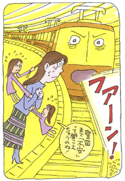

全般性不安障害（不安神経症）1
死への恐怖心にとらわれた日々
（不安神経症、パニック発作、他）
岡野 沙枝（仮名）36歳・主婦
死への恐怖
私は兄弟がなく、小さい頃から胃腸の弱い子供でした。又、怒りっぽくて負けず嫌い。喧嘩ばかりで、友達が出来ても長続きしません。よく「性格が変わっている」などといわれていました。そんな私の神経症の始まりは、幼少の頃に観た原爆のアニメ映画がきっかけでした。死んでゆく人々の姿を観て「死んだらどうなるか」「自分はいつ死んでしまうのか」と考えるようになり、その度に恐くて泣きました。小学4年生の時です。初めての誕生日パーティーに誰にも来てもらえなかった事から、「やはり自分は誰にも好かれない。友達はできない」と思い込むようになりました。皆と遊ぶ事が少なくなり、以前に増して空想の世界へ入る事が多くなりました。
そんなある日、急に横断歩道の白線の数を数える事がとまらなくなりました。そのことで車に引かれそうになってからは、止まっている車をみても「轢かれてしまうのではないか」と思うようになりました。中学2年生の時には、友人とのトラブルとクラブの厳しさとで、過敏性腸炎になりました。その後森田療法に出会うまで、症状に加えて、この病気に悩まされ続ける事になります。
不安神経症の始まり
高校一年の終わり頃。地下街の人ごみで、気分が悪くなり眩暈を起こしました。顔を上げた途端、周囲の人が皆、自分に向かってくるような錯覚に陥りました。その数日後、放課後にふとした不安を感じた時です。背中と足がざわつき、寒気が起りました。続いて訳のわからぬ強い不安感や眩暈が襲ってきます。いても立ってもいられなくなり、気がつくとトイレの中でうずくまっていました。それから、自分はおかしくなったのではという恐怖心と、予期不安に悩まされるようになりました。又、目を閉じると死んでしまうのではないか。目を瞑っていても瞼に映る光が気になる、などで眠れません。学校の保健室で見つけた本で、自分が「不安神経症」である事を知りました。ずっと強いつもりでいた私は、弱い自分を認めたくない一心で、いろんなことで気を紛らわせました。
なんとか高校を卒業し、就職。文章を書く事が好きだった私は、高校の担任の先生に勧められた学校にも通いだしました。充実した毎日の中で症状は薄れていました。しかし、数年後に再発症し、その後十数年間も悩み続けるなど、その時には思いもよりませんでした。
再発を繰り返す日々

数年後、仕事で品質管理を担当していた私は、あるトラブルが発生してからというもの、帰宅してからも仕事のことが気になり眠れなくなりました。又、過敏性腸炎が再発した事から、いつお腹が痛くなるかと思うと電車から飛び降りたい衝動に駆られます。夜中に不安発作を起こしては、母に連れられて何度も救急病院に行きました。自分はこのまま死ぬのではと、夜通し泣きました。その頃、急に部屋を片付けたくなった時に「死ぬ前に人は身辺整理をしたくなる」という言葉が思い浮かびました。それから何かにつけて、死に結び付けて考えるようになりました。その度に死への恐怖心で頭が真っ白になり、我を忘れてしまいます。カウンセリングの学校に通い始めて、不安発作は影を潜めたものの、死の恐怖にとらわれる苦しい毎日は続きました。
29歳の時、転職の為に退職を申し出たところ、子会社への出向の話をもらいました。しかし、先輩社員との折り合いが悪いことと、仕事が暇な事とで何をしても楽しくなく、やる気が起きなくなりました。何かに打ち込まなければと、再び簿記の学校に通い始めました。2度目の受験前の事。授業中、問題が解けない事に焦りを感じた途端、体が震え、お腹が痛くなり退席しました。それから腹痛が起きるのが怖くて、欠席がちになり、またも受験に失敗。3度目の受験が近づいたある日、授業中に「教室から出られない」という恐怖心で胸が締め付けられました。それに、暗記をしなければならないのに集中できず、雑念を振り払おうとするうちに本が読めなくなりました。電車に乗る事が一層怖くなり、会社を休む事が多くなりました。
間もなく、父が急死。身にも入っていない勉強と、症状のことばかり考えていた自分が情けなくてたまりません。しっかりしなければと自分に言い聞かせるのですが、その思いとは反対に、今までにない痛烈な不安感に一日中苛まれだしました。会社へ行けなくなり、心療内科を受診。薬の服用が始まりました。その時は本当に気が狂ってしまうのではと思いました。
約一年後、症状が気にならなくなってきたので勝手に服用を中止。が、すぐに再発。外へ出るのが怖いなど、症状は前よりもきつくなっていきました。その頃、社用で出かけた際に接触事故を起こしました。それから車で会社の用事をする度に事故を起こしたのではと、確認する癖がやめられなくなりました。また、死へのとらわれが強くなっていきます。そのあまり、自分が何処を歩いているのか、わからなくなる事さえありました。
森田療法との出会い
以前と違う心療内科を受診し、そこでカウンセリングも受けることにしました。しかし薬の量は増え、一向によくなりません。一人では、薬だけでは治せない。普通に生活を送りたいと強く思い始めた頃、病院で森田療法を紹介されました。勉強できる場はないかとインターネットで調べたところ、生活の発見会（神経症の自助グループ）を知りました。
もう自分には後が無い。どうしても治したい。その一心で森田の勉強をはじめました。『感情はコントロールできないもの』など、自分が全く逆の事ばかりしていたことに驚きました。まさに目から鱗の日々です。そして特に『死への恐怖心があってあたりまえ』『神経症は病気ではない、自分だけが苦しいのではない』というアドバイスには、救われるような思いでした。
この頃、インターネットで意見交換が出来る掲示板（メンタルヘルス財団の体験フォーラム）へ参加し、毎日のように掲示板へ書き込み、森田の仲間からたくさんのアドバイスや励ましの言葉をいただきました。自分は一人ではないと、とても心強かったです。お蔭で症状が軽快していき、今まで症状を理由にしていろいろな事から逃げていたことなど、自分の事も周囲の事も見えてくるようになりました。
そんなある日、不安発作に見舞われた時の事を話しているときのことです。強烈な不安発作が起りました。衝動に駆られて部屋を出ようとする私に、M先輩が「出てはいけない」と逃げ道を塞いでくれました。気を紛らわす事もできず、ひたすら発作がおさまるのを待つしかありませんでした。やがてこれを機に、発作に対する予期不安が薄れていきました。「不安感は放っておけばやがて消滅する」という事が身をもって解ったのです。乗り物に対する恐怖感も薄れていきました。不安感を、特別視する事が減ってきたのです。常備薬となっていた頭痛薬や胃腸薬も手放せるようになり、眠れないほどの頭痛もおきなくなりました。
不安はあっても、まず行動
体力をつけようと、教えてもらった自転車で会社通勤を始めることにしました。日頃は電車でしたから、どこをどう走ってよいか分かりません。初日には、不安でいっぱいになり辞めようかと思いました。しかし、思い切って毎日走っているうちに景色や風など、自然を感じる事が楽しくなっていきました。私生活でやりたい事が増え、今まで好きだった事を再開。そして、断薬しようと思いました。途中、苦しくてたまらなかったこともありました。が、日々掲示板で皆さんに励ましていただき、成功することができました。
やがて、症状の事でひっかかっていた結婚問題を先輩に相談。仲を取り持っていただき、同じ森田療法で出会った仲間である主人と結婚。その間もいろいろありましたが、無事子供が生まれ、自分が親となったことで、父母への感謝の気持ちも強くなりました。症状にとらわれ、家族を苦しめた日々を繰り返したくはありません。
森田を学ぶ前は、「平凡な人生はイヤ、大きな事をしたい」などと現実離れしたことばかり思っていました。けれど、日常の平凡な生活の中にこそ、幸せがあることに気付きました。普通に生活できることは、なんて幸せなことなのでしょう。足元をみて、事実を見て、これからも勉強し続けていきたいと思います。又、これからは微力ながらでも、悩んでいる方のお力になれればとも思います。